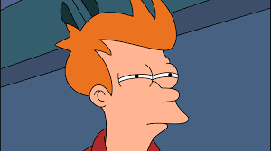
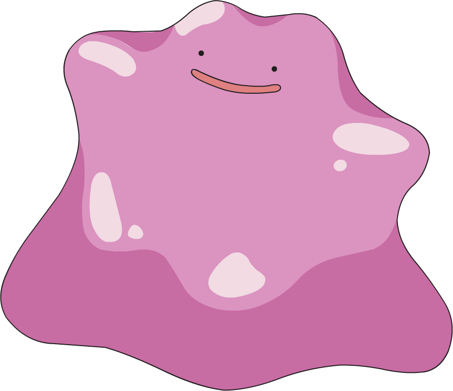

use case diagram => Klassdiagram, sekvensdiagram
- Kravinsamlning, det svåraste momentet i hela analysen.
- Målet ändras på vägen
- Dåligt prioritering av kravenotydliga kravenkan inte uttrycka vad slutavnändaren behöver!
- kan inte uttrycka vad slutanvädaren gör och Varför
- först när användaren ser en lösning förstår de vad man vill ha
- Krav ska vara väldigt tydligt och klart.
- Bryt ner use case diagram mycket till olika sekvensdiagram / klassdiagram.
- Krav skall göra en sak.
- Gör en prototyp för att få fram rättsvar.
- Användare är vana vid hur det har varit. Vill inte ha ändring. De kan gamla system väldigt bra.
- Användaren är rädda för ändringar.
- lyx krav, bra att ha, jag vill ha min lösning på 20 olika språk
- motstånd mot förändring
- otillräckliga Krav
Kravhanteringsprocess
Fel kravspec
Fel system spec
Fel kravspec
s
som inte motsvarar användarens behov innebär

Det är nåt bängt här
Artefakter skall endast skapas om de fyller en funktionella
Artefakter skapas endast ifall de har värde för dig och teamet
som en hjälp i utvecklingen...
för att underlätta kommunikation
inte i första hand som dokumentation.
Gäller på alla nivåer
Diagram skapas för att klargöra och definiera oklarheter.
Kvalitetssäkra
Kraven kvalitetsäkra för att säkerställa att rätt krav är dokumenterade
Göras i början och kontinuerligt, inte på på slutet
Bra teknik leverara små system i kort tid
Förvalta
är ett Strukturerat angreppsätt för att hantera ändring i kraven.
Inbakade i rutiner för att säkerställa kvalite.
Iso standard är bara en bullshit
Proffessionella kollar inte efter certifiering de kollar bara efter rutiner, arbetsättet.
- Samla in kraven, oserterat, anteckningar ljud inspelningar.
- Strukturera kraven
- Prioritera
- Dokumentera, jag måste följa en viss standard på kraven jag samlat in.
- Kvalitetsäkra
- Förvalta
Kravinsamlning
- Ta reda på vad användaren vill ha
- Ta reda på anvädaren uppgifter, mål, kunskaper och förmågor vilka problem de har
- Vilka uppgifter de behöver Göra
- vilka guppftier kan vi förbättra
- Försök att se problemet från anvädren synvinkel.
- Man skall alltid lösa problemet från användaren synvinkel.
- Även om man inte håller med måste man följa deras synvinkel :)
Beskriv alla befintliga uppgifter
Beskriv användarnas behov
Beskriv vad nya systemet krävar hann inte med denna
Kravinsamling - Organistations kontext
- Kontext kan vara om organisationen är Militär, sjukvård etc.
- Förstå din organisations politik och kultur
- Kolla in liknande och konkurrenters systemet
- Vet nuvarande system - det befintliga
- Välj lämpliga användare attobservera och / eller intervju
- Förbered ett script med inledande frågor för varje intervju
pusha robin!
det måste ju finnas inbyggt git i atom ????
vet inte hur man gör ju

Vem är användarna?
Skapa personas (profiler?)
Framstå som en riktig personas
KravinsamlningBild
Beskrivning
Strukturerade intervjuer
Förbestämda frågor och svarsalternativ
Systematisk och effektiv
Mindflexibel i valet av frågor
risk för ledande frågor
kan inte lägga till frågor under tiden
Semi-strukturerade intervjuer
Vissa frågor är förberett men frihet i ordning och djup
Kan förbereda fråeformulär eller checklista innan
Kan komplettera med öppna frågor
Ta reda på fakta om intressenter innan.
Ostrukturerade intervjuer
Inga förberedda frågor alt. några få öppna frågor.
Berätta om din syn på ... ?
Får frågorna utförligt besvarade
Krävs lite förberedelse och träning
Kostnadseffektivt
Intervjuaren behöver styra
Risk för att tid läggs på oväsentligheter.
hittade hur man gör men måste logga in på git genom git bash
! hur man gör vad?!
Tänk ut i förväg vad du vill med Intervjuaren
Träna på att lyssna! Avbryt inte!
Verifiera - "Det du sa tolkar jag som.."
Var artig, visa intresse!
Tänk på kroppsspråket (båda tvås) - Kulturell aspekt
Ha inte förutfattade meningar(som man frågar får man svar)
Avbryt intervjuRätta inte
Stå ut med långsamma svar - Tålamod :p
Observationer
Watching users do their jobs
Obtaining more firsthand and objective measures of employee interaction with information systems
Passive-observation
Observera allt på personens arbetsdag, hur händelser påverkar subjektet.
Inte fråga när man observerar det är ingen intervju
Svårt att observera
Focus groups
Samla in olika användare tex utvecklare kunder, användare, beställare, säljare, och testare
Det är en workshop, få synpunkter från allas olika synvinklar.
Mall för kravspecifikation
Vad innehåller en kravspec
Bakgrund
Produkten
Organisation
funktionella kraven
icke-funktionella kraven
användarevänlighet
kapacitet
Indentiiera andra kraven
De krav som inte fångas i use case måste sammanställas någonstans
Supplementary specification fångar krav om:
Dokumentation
Paketering
etc
Glassary fångar begrepp och definnitioner
Kan också användas som datauppslagsverk
Supplementary specification
fånger krav som inte så lätt fångas annostädetailskan bla innehållande
furps+ - funktionella kraven
rapporter
hård och mjukvarubegränsingar
utvecklingsbegränsniungar ex verktyg
Tidiga designval bör undvikas
Gloassary - begrepplista
LISTA VIKTIGA TERMER OCH begrepp
PÅBÖRJA TIDIGT!
dATAUPPSLAGSVERK(dATA DICTIONARY)
DEL AV Gloassary
Samlar data om data
METADATA
AKTUELLT FÖRST UNDER ELABORTATION
ny fil för uppgiften
fan vad snett det blev mot slutet haha allt var så bra kolla här liksoSmANCI
Du har flyttat på var du sparar på filen ja det är lite kaos med filplatserna atm
Wtf med caps nu är det uppgift. lägg den iAnteckningar repo men måste typ starta om atom för den sparar ju här
HAN ÄR SANIC men han byter tp om en sec. jag typ utvärderar ifall det kommer vara en skip slide eller inte